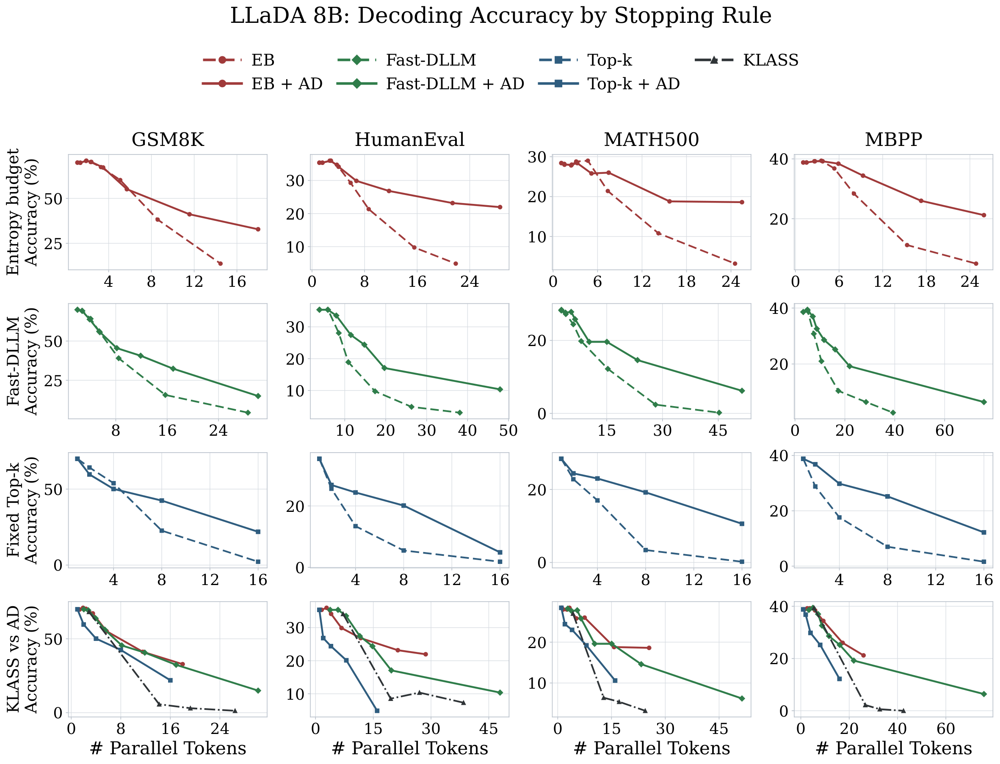
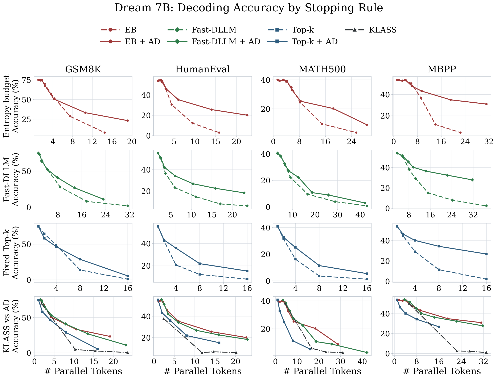

Abstract
Masked diffusion language models can reduce inference steps by revealing multiple tokens per denoising iteration, but this parallelism is fragile: positions that are individually confident may be unsafe to commit together when their predictions are coupled. Existing training-free samplers such as Top-k, Fast-dLLM, and EB-Sampler mainly control how many tokens to reveal, while often ranking candidates by token-wise scores that ignore interactions within the selected set. We propose ADAS, a training-free reranking rule that leaves the base sampler's stopping rule unchanged and greedily discounts each token-wise confidence score according to its attention to already selected positions, weighted by their prediction uncertainty. Across LLaDA-8B-Base and Dream-7B-Base on the reasoning benchmarks GSM8K and MATH500 and the code benchmarks HumanEval and MBPP, plugging ADAS into all three samplers improves low-NFE performance at matched denoiser evaluations by 9.11 and 10.46 percentage points on average, respectively, with 3.1% per-forward runtime overhead.
Method
At each denoising step, let \(M\) be the masked positions and \(S\) the positions already selected for unmasking in this step. ADAS builds \(S\) greedily. Each remaining candidate \(i \in M \setminus S\) is scored by its marginal utility
where \(c_i\) is the token confidence at position \(i\), \(A_{is}\) is the attention from candidate \(i\) to selected position \(s\) (final layer, averaged over heads), and \(1 - c_s\) measures how uncertain the selected prediction still is. A candidate is penalized for attending to a selected position whose prediction is unreliable, not merely for being coupled to it. We use \(\alpha = 40\) in every main experiment.
- Pick the remaining candidate with the highest \(u(i \mid S)\).
- Ask the base sampler whether the enlarged set is still admissible: \(|S| \le k\) for Top-k, the confidence condition for Fast-dLLM, or the entropy budget for EB-Sampler. If not, stop.
- Add the candidate to \(S\) and subtract \(\alpha A_{is}(1 - c_s)\) from every other candidate's score. Updates are incremental, so selection costs \(O(|S|\,|M|)\).
ADAS changes only the order in which candidates are proposed. The stopping rule still decides how many positions are unmasked, so the same update plugs into fixed-cardinality, confidence-threshold and entropy-budget samplers.
Does attention track dependence?
We run confidence Top-k decoding (\(k = 8\)) on 100 problems per benchmark. At each probed state we reveal the most confident masked position \(i\) in a counterfactual copy and measure how much the distribution at each co-selected position \(j\) shifts, \(K_j = D_{\mathrm{KL}}(p^0_j \,\|\, p^i_j)\). This gives 500 states and 3,500 pairs per benchmark and model.
| Task | Model | \(\bar\rho_s(A_{ji}, K_j)\) | \(\rho(A_{ji}, K_j)\) | \(\rho(u_{ji}, K_j)\) | \(\bar\rho_s(c^0_j, K_j)\) | \(\bar\rho_s(s_j, K_j)\) | Gain |
|---|---|---|---|---|---|---|---|
| GSM8K | Dream | .358 | .311 | .823 | .045 | −.281 | +.325 |
| LLaDA | .360 | .463 | .835 | .076 | −.330 | +.405 | |
| HumanEval | Dream | .305 | .423 | .782 | −.030 | −.209 | +.178 |
| LLaDA | .389 | .544 | .841 | .100 | −.363 | +.463 | |
| MBPP | Dream | .204 | .284 | .791 | −.114 | −.211 | +.097 |
| LLaDA | .251 | .327 | .794 | −.023 | −.215 | +.193 | |
| MATH500 | Dream | .316 | .298 | .806 | −.079 | −.271 | +.193 |
| LLaDA | .436 | .545 | .815 | .116 | −.279 | +.395 |
\(\bar\rho_s\) is the mean statewise Spearman correlation and \(\rho\) correlates all pairs. \(u_{ji} = A_{ji}(1 - c^0_i)\) is uncertainty-gated attention and \(s_j = c^0_j - 40\,u_{ji}\) is the ADAS score. A positive Gain means the ADAS score is more negatively associated with the KL shift than confidence alone.
Attention is positively correlated with the KL shift in every setting, and gating it by uncertainty raises the all-pairs correlation from .28–.55 to .78–.84. Where ADAS and confidence ranking first diverge (1,098 states), the tokens ADAS defers have mean KL .793 against .230 for the replacements it picks, so it delays exactly the tokens whose predictions would change most once their neighbor is revealed.
Results
Moving right in each panel reveals more tokens per denoising step, which means fewer denoiser evaluations. Solid lines use ADAS reranking and dashed lines are the vanilla stopping rules. The bottom row compares the ADAS variants with KLASS and DAPD.


Matched-NFE gains
| Dataset | EB | Fast-dLLM | Top-k | Avg. over methods |
|---|---|---|---|---|
| GSM8K | +9.22 / +14.31 | +6.92 / +6.36 | +11.90 / +5.88 | +9.35 / +8.85 |
| MATH500 | +6.49 / +4.84 | +5.70 / +2.15 | +10.73 / +6.93 | +7.64 / +4.64 |
| HumanEval | +10.45 / +15.63 | +6.90 / +12.03 | +9.55 / +10.77 | +8.97 / +12.81 |
| MBPP | +10.37 / +15.01 | +7.39 / +12.04 | +13.67 / +19.60 | +10.48 / +15.55 |
| Avg. over datasets | +9.13 / +12.45 | +6.73 / +8.14 | +11.46 / +10.80 | +9.11 / +10.46 |
Absolute gains in percentage points, reported as LLaDA-8B-Base / Dream-7B-Base. For every baseline point averaging at least four tokens per step, the ADAS curve is interpolated at the same NFE. Across 90 matched operating points the mean gain is +9.27 (95% bootstrap interval [+7.74, +10.84]), with 80 improvements and 10 regressions.
Code
The implementation supports Dream-7B-Base and LLaDA-8B-Base through lm-eval-harness.
Use sampler=attention_discounted and pick a variant:
| Stopping rule | Vanilla ranking | ADAS ranking |
|---|---|---|
| Fixed Top-k | confidence_topk | attention_discounted |
| EB-Sampler | eb_entropy | attention_discount_ab_budget_eb_stop |
| Fast-dLLM | fast_dllm | ad_fast_dllm |
BibTeX
@misc{sahin2026attentiondiscounted,
title = {Attention-Discounted Adaptive Sampler for Masked Diffusion Language Models},
author = {Sahin, Yusuf and Saikia, Ahmed Rockey and Cevher, Volkan and Favaro, Paolo},
year = {2026},
eprint = {2606.10829},
archivePrefix = {arXiv},
primaryClass = {cs.CL},
url = {https://arxiv.org/abs/2606.10829}
}